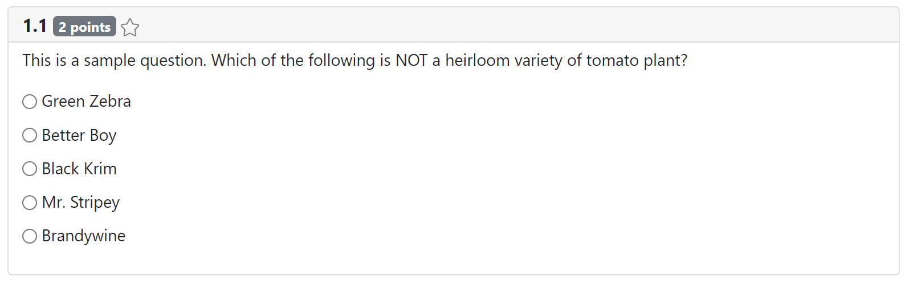

The discriminant "multiple_choice" is used to distinguish FITB specifications.
Whether or not the question allows multiple selection.
Choices for selection. May include markdown.
For multiple-selection questions, an optional limit on selected choices.
A sample solution, which may not be blank or invalid.
A default grader, used to evaluate submissions for this response.
Essentially, a submission for an MC response is an array of numbers corresponding to the indices of selected choices. For a single response question, this array will be a single element. For multiple response questions, the array may contain one or more elements.
A submission may also be BLANK_SUBMISSION if nothing was selected.
A submission may also be INVALID_SUBMISSION if the array of selected choices contains more
elements than a specified limit. (This should not regularly happen, but is possible if e.g. a
student were to nefariously edit their answers .json file before turning it in. Upon loading,
their submission would be checked and replaced by INVALID_SUBMISSION).
Generated using TypeDoc
Multiple Choice Response Element Specification
An Multiple Choice response provides several options that students select from. It may be configured to allow only one choice (rendered as radio buttons) or multiple choice (rendered as checkboxes).
The MCSpecification type alias represents the information needed to specify an MC response as part of a question.
Here's an example of a question with an MC response.

Single or Multiple Response
If the
multipleproperty is set tofalse, choices are rendered as radio buttons and students may only select a single choice. If the property is set totrue, choices are rendered as checkboxes and students may select any number of choices.A multiple-selection MC question may specify a limit for the number of checkboxes that may be selected via the
limitproperty. (This property is ignored if multiple selections are not allowed.)MC Submissions
Essentially, a submission for an MC response is an array of numbers corresponding to the indices of selected choices. See
MCSubmissionfor details.